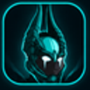
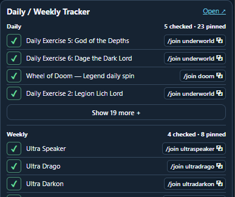
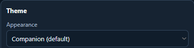

AQW Companion
Your adventure, connected.
Install, connect your inventory and track your next goal. You can use the Wiki tools even without syncing an inventory.
Add the extension
Once the Chrome Web Store listing is available, open its official link, choose Add to Chrome and confirm Add extension. Open your browser's Extensions menu and pin AQW Companion to the toolbar.
Closed Beta testers: use the official link shared by the maintainer. The extension is not yet published at the time of this guide.
Manual installation for pre-release testers
- Extract the extension-only ZIP to a permanent folder.
- Open chrome://extensions, opera://extensions or edge://extensions.
- Enable Developer mode, select Load unpacked and choose the folder containing manifest.json.
- To update an unpacked build, replace files in that same folder and select Reload. Refresh the Wiki and Companion once after installing a new build.
Connect your inventory and badges
- Open the official Inventory page and sign in. In extension Home, click Sync Inventory.
- The extension reads Inventory and Bank, opens Companion if needed, and saves the snapshot. Wait for the confirmed success message.
- Open your public Character Page once and click Sync Badges. The badge tracker updates after matching and saving.
Optional Account Manager access (Enable inventory export in Settings) allows automatic source-page opening for subsequent syncs. Otherwise open the relevant page and click again. Progress shows real counts when known, and an animated bar during unmeasured steps.
Manual export and the website's Import & Sync remain available under Settings as a fallback. Existing progress is preserved if capture fails.
Import & Sync
Select Open Companion and click Import & Sync in the top-right of the website. Confirm the import when prompted. Return to the extension Home; the inventory status should show the new saved snapshot.
Open AQW Companion ↗ · Official Account Manager ↗
Repeat the export and import after farming to update your snapshot. Inventory values are not live game data.
Use your mini dashboard
Open the Companion to load your saved Wishlist and pinned quests. In the popup, Wishlist shows tracked progress; the Daily / Weekly Tracker displays the first four entries of each category. Select Show more to expand.
- Click the green check to mark a quest done or undo it. Completed quests move down.
- Click the /join button to copy the saved map command.
- Pending checks are sent to the Companion when available. Open or refresh it if a check remains pending; completion is confirmed only after the site saves it.

Browse the AQW Wiki
Open AQW Wiki. On supported item pages, view item details, ownership and available recipe material progress, or add a goal with the Wishlist button. On supported quest pages, pin quests to the Companion. Directory search can show partial results as pages load. Unsupported or ambiguous data stays unknown.
Choose your theme
Open Settings, select Companion, Dark Mode, Light Mode or Cas B Neophyte, then select Apply theme. Connected Wiki tabs update without reloading. To restore the default, choose Companion and apply it.

Need help?
Refresh Companion and the Wiki after an extension update. Use Settings → Troubleshooting & privacy → Test connection only if sync fails. Never share passwords, session cookies or complete personal exports in a bug report.